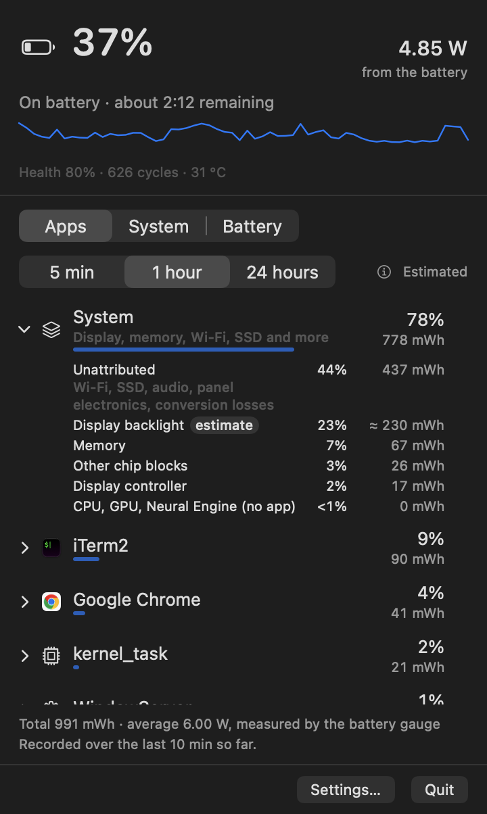
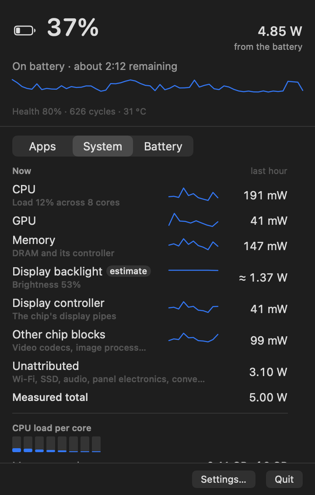
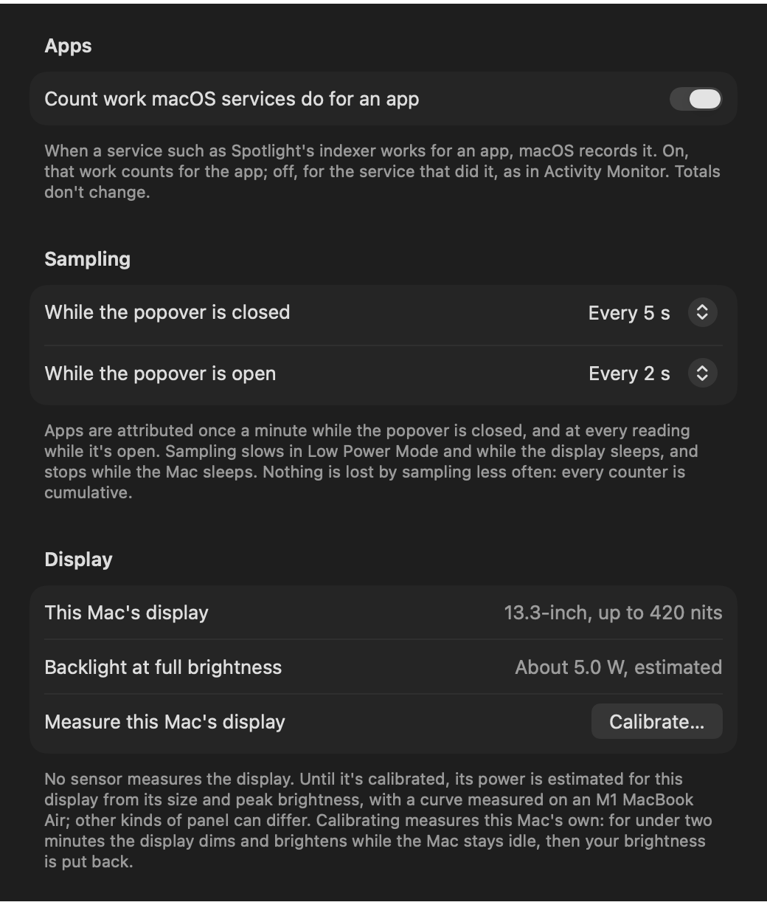
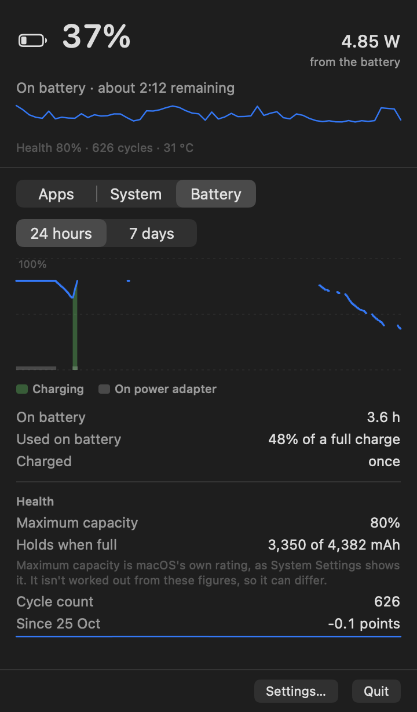
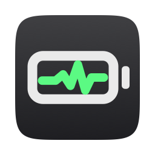

The screen isn’t an app.
The backlight is often the biggest single draw on a laptop, and no list of apps shows it. Above, it’s 23% of the hour.
Battery Trace for Mac
Power by app, and by part of the Mac, in your menu bar. The total is measured, every estimate is labelled, and the rows always add up.

The real app, on the MacBook Air this page was built on.
The problem
The battery menu names an app or two using significant energy. Activity Monitor ranks processes by Energy Impact, a score with no unit. Neither says how many watts went where, or what the screen cost.
The backlight is often the biggest single draw on a laptop, and no list of apps shows it. Above, it’s 23% of the hour.
A browser runs renderers, a GPU process and helpers under names you’ve never seen. Counted one by one, the app that started them looks cheap.
Wi‑Fi, the SSD, audio and power conversion use power no app’s counter sees. Spread across apps, it would make every figure wrong.
What it shows
A small menu bar app: the live wattage, and three tabs behind it. No Dock icon, no account, no permissions.
The battery gauge and the Mac’s own power sensor give the whole. Everything below adds up to it.
CPU, GPU and Neural Engine energy, split by the kernel’s own per-app counters. Helpers count for their app.
The display, memory, the rest of the chip, and what no counter covers, each in a row of its own.
Apps
Every app gets a bar for its share of the measured total, over the last 5 minutes, hour or 24 hours. What isn’t an app is ranked the same way.
New in 0.9
Power that isn’t an app’s sits in one System row, ranked by size like any app, so it’s first when it uses the most. Click it for its parts: Unattributed, the display, memory and the rest of the chip.
Processes
Renderers, XPC services and helpers fold into the app that owns them, even ones that have already quit. Click an app to see its processes.
Services
When Spotlight’s indexer or another macOS service works for an app, macOS records it. Count it for the app, or for the service as Activity Monitor does.
Estimated
macOS has no per-app battery figure. Each app’s share is the chip’s measured energy, split by the kernel’s counters, and the popover says so.
Notifications
Turn it on, and you’re told when an app averages more than 1, 2, 3 or 5 W, your choice, for ten minutes on battery.
System
The System tab lists what the Mac itself is spending, part by part, with the last hour beside each.

CPU, GPU, Neural Engine, memory, the display controller and the rest of the chip come from the chip’s own energy counters.
Nothing measures the backlight, so Battery Trace works it out from the brightness and this Mac’s panel, and marks it as an estimate.
Wi‑Fi, the SSD, audio, panel electronics and power conversion have no counter. What the measured total leaves over is shown as it is, never divided among apps.
Apps, parts and Unattributed always add up to the measured total: the battery gauge, or the Mac’s power sensor.
Display
Out of the box, the backlight estimate is scaled to your panel from its size and brightness. Calibrate… measures yours instead: for under two minutes the display dims and brightens while the Mac sits idle, then your brightness is put back.

Settings › Measurement, on the same Mac.
Battery

The last 24 hours or 7 days, with charging and time on the adapter shaded.
How long you were on battery, how much of a full charge that used, and how often you charged.
Maximum capacity as System Settings shows it, what the battery holds when full, the cycle count, and the trend since Battery Trace started.
History stays in one file on your Mac. Export it as CSV, minute by minute, from the right-click menu or Settings.
Measured on itself
of one CPU core, with the popover closed. Most of the time, that’s all it costs.
Energy Impact in Activity Monitor with the popover closed: 51st of all running processes.
of memory.
apart: the live power sensor against the battery gauge, over five minutes.
Measured on a MacBook Air (M1, 2020), on battery in Low Power Mode. Every figure and how it was taken is in Performance and Validation.
Privacy
It reads counters macOS makes available to any app. No telemetry, no account.
No password, no root helper, nothing to allow in System Settings. macOS asks only if you turn on notifications.
It goes online only to ask which version is newest: when you choose Check for Updates…, or once a day if you turn that on. The request carries nothing about your Mac.
History lives in one file in your Library. Export it or delete it whenever you like.
MIT licensed. Read every line before you run it.

Free and open source, for macOS 14 or later. Built for Apple silicon; Intel Macs show fewer parts.
The usual Mac way: open the disk image and drag Battery Trace into Applications.
Updating: Check for Updates… in the right-click menu says when there’s a new version. Drag it into Applications, choosing Replace. Your settings and history stay. macOS checks each new version afresh, so approve it with Open Anyway once more, as in step 3.
Removing: quit it from its right-click menu and drag it to the Trash. The README has the two commands that remove its history and settings too.